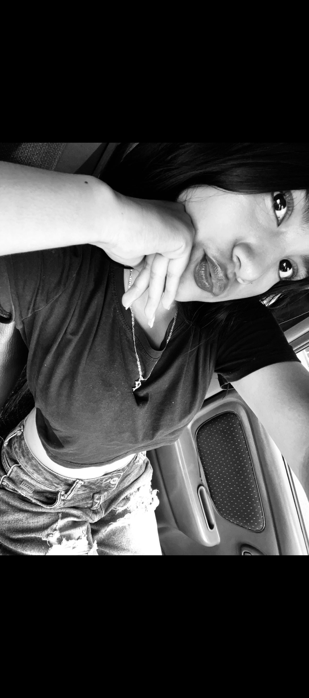
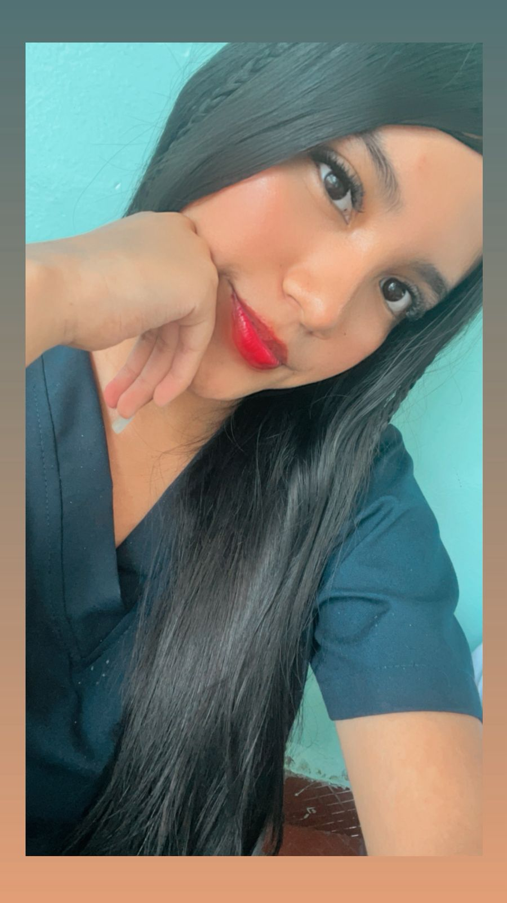
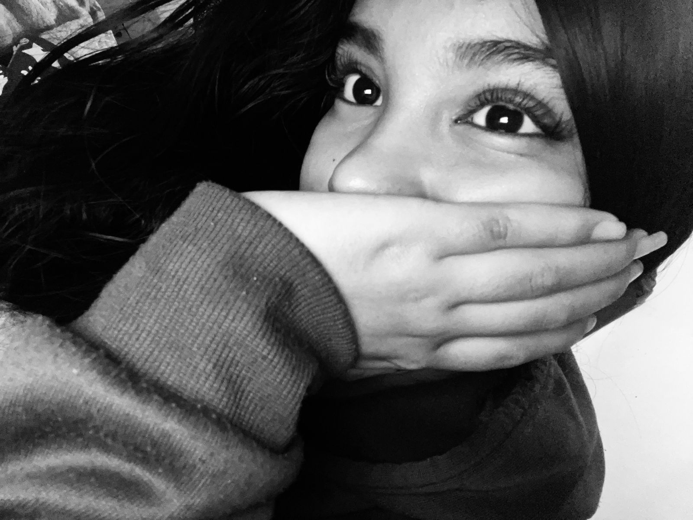
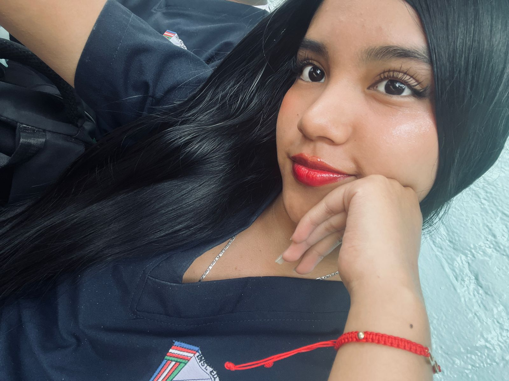
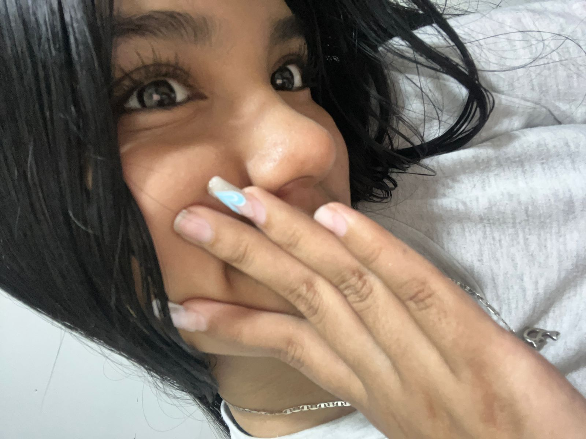
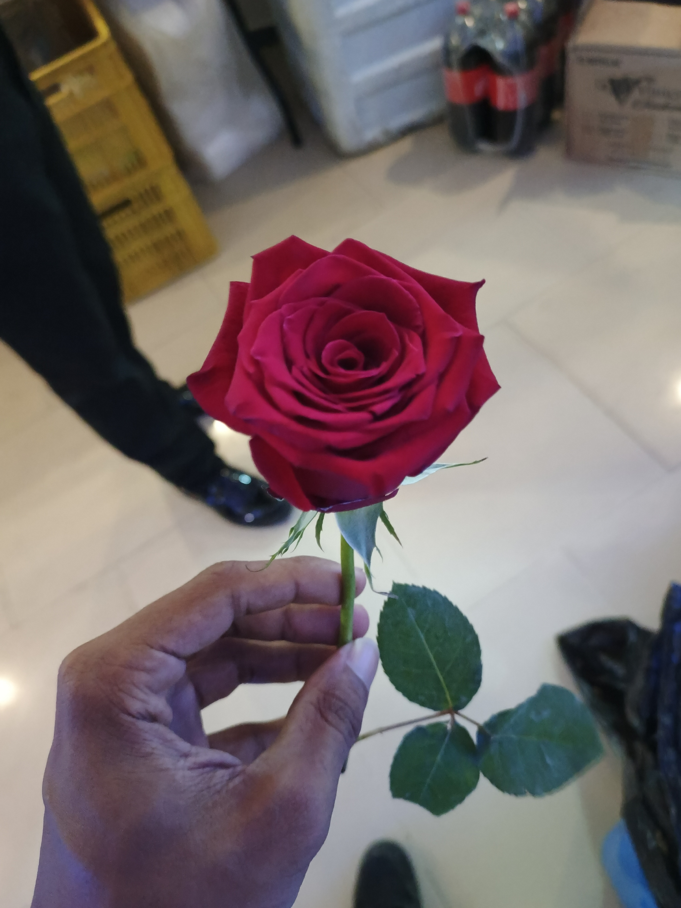
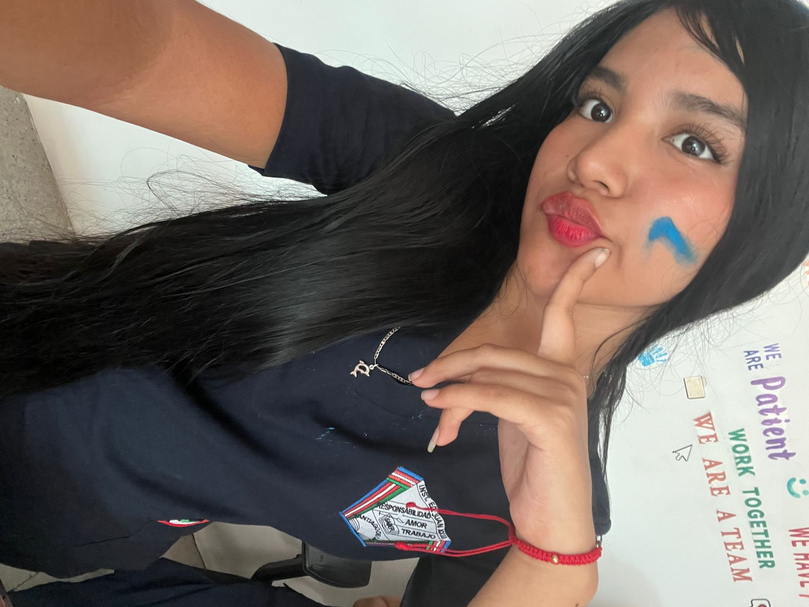
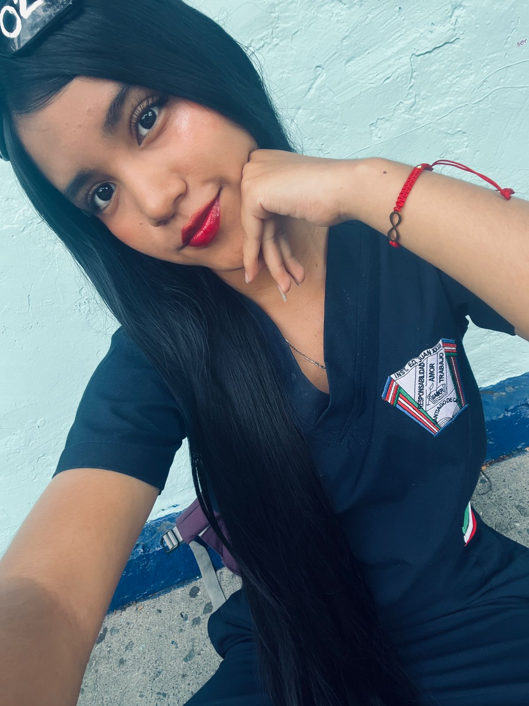

Todo
Nuestra historia
Recuerdos
Especiales


Feliz cumpleaños mi cachetona

Lo que más me gusta de ti

Mi niña hemocha..

Mi lugar favorito en el mundo

Te amo ♥️

🧩 Jugar
(Pista 1 Sopa de letras)

🧩 Jugar
(Pista 2 Contexto)

🔒 ESTRENO
🔒
Sorpresa del 13 de marzo

🔒 BLOQUEADO
🔒
El Viaje - Etapa 1